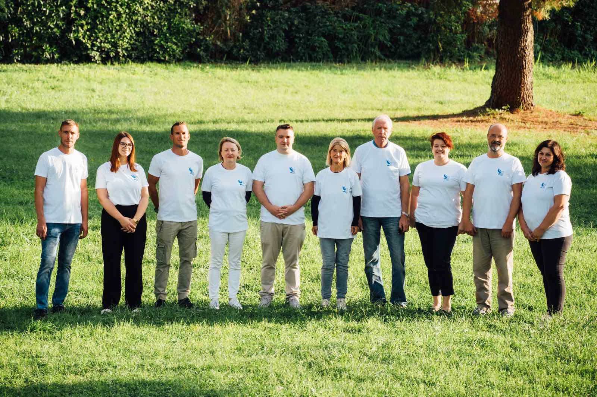

Tri možnosti za večjo fotografijo ekipe v razdelku »Kandidati za Občinski svet«. Spodaj izberi črko.
Besedilo ostane levo zgoraj, fotografija zavzame celotno širino vsebine in je približno dvakrat večja kot zdaj. Klasično, varno, zelo berljivo.
Kandidati za Občinski svet
Predstavljamo kandidate in kandidatke volilne številke 13 — Skupaj za Izolo (SZI) za Občinski svet Občine Izola.

Fotografija sega od roba do roba, naslov in gumb sta na spodnjem prelivu. Najbolj udarno, fotografija je glavni junak.
Fotografija zasede ~60 % širine in celo višino razdelka, besedilo se preseli v svetlo kartico desno. Urejeno, kot uvodnik.
Kandidati za Občinski svet
Predstavljamo kandidate in kandidatke volilne številke 13 — Skupaj za Izolo (SZI) za Občinski svet Občine Izola.
Kandidati za Občinski svet